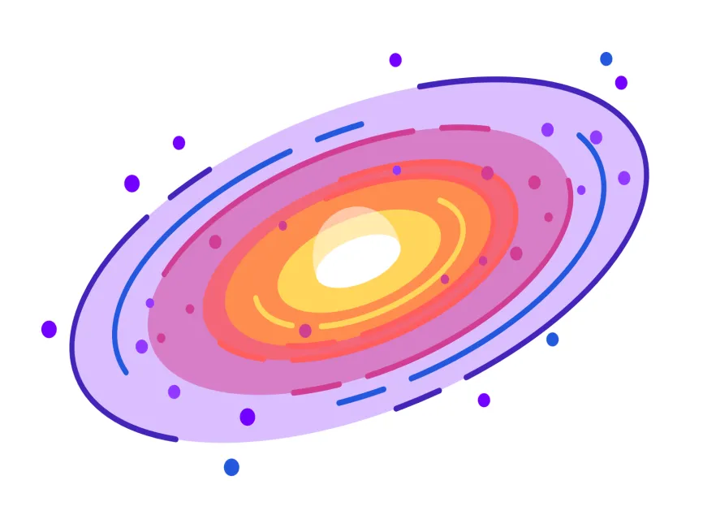
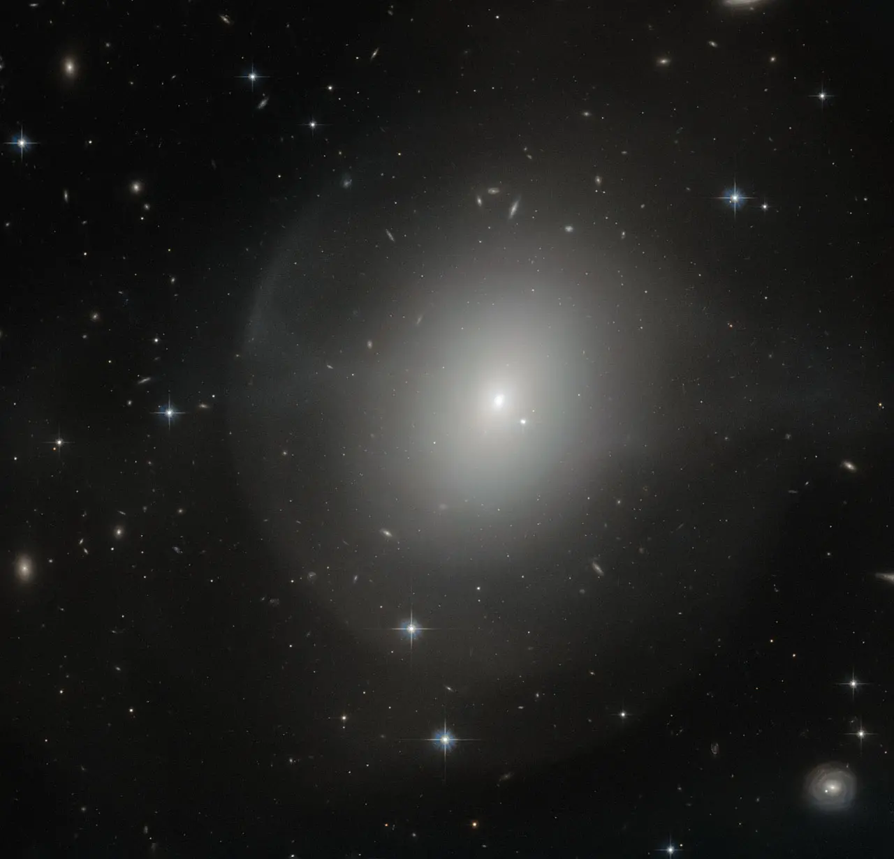
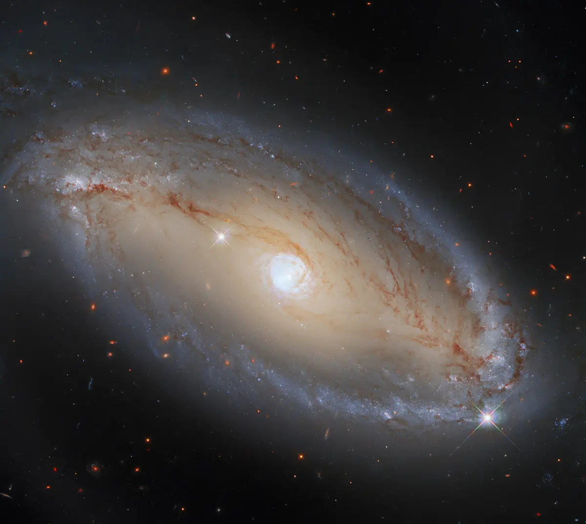
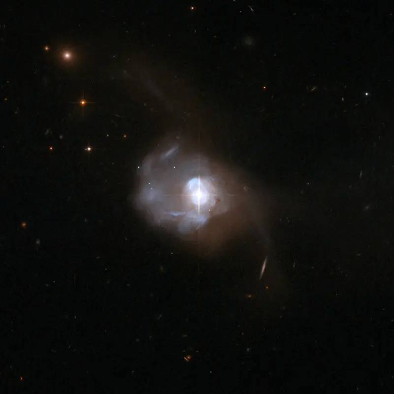
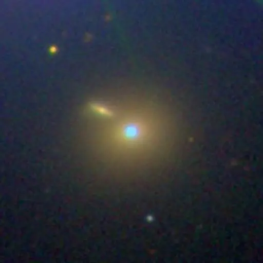

Types of Galaxies
Spiral Galaxies
Our Milky Way is one example of a broad class of galaxies defined by the presence of spiral arms. These galaxies resemble giant rotating pinwheels with a pancake-like disk of stars and a central bulge or tight concentration of stars.
The spiral arms can be wound tightly or loosely, and some cannot be seen from Earth because we view the galaxy from the side, edge on.
Spiral galaxies are surrounded by halos, mixtures of old stars, star clusters, and dark matter – invisible material that does not emit or reflect light but still has a gravitational pull on other matter. The youngest stars form in gas-rich arms, while older stars can be found throughout the disk and within the bulge and halo.
Both the Milky Way and the Andromeda galaxies belong to a subtype known as barred spirals, which make up two-thirds of the group. Barred spirals sport ribbons of stars, gas, and dust that cut across their centers. Scientists think the presence of a bar indicates that a galaxy has reached full maturity.

Elliptical Galaxies
Elliptical galaxies have shapes that range from completely round to oval. They are less common than spiral galaxies.
Unlike spirals, elliptical galaxies usually contain little gas and dust and show very little organization or structure. The stars orbit around the core in random directions and are generally older than those in spiral galaxies since little of the gas needed to form new stars remains. Scientists think elliptical galaxies originate from collisions and mergers with spirals.

Lenticular Galaxies
Lenticular galaxies are a kind of cross between spirals and ellipticals. They have the central bulge and disk common to spiral galaxies but no arms. But like ellipticals, lenticular galaxies have older stellar populations and little ongoing star formation.
Scientists have a few theories about how lenticular galaxies evolved. One idea suggests these galaxies are older spirals whose arms have faded. Another proposes that lenticulars formed from mergers of spiral galaxies.

Irregular Galaxies
Irregular galaxies have unusual shapes, like toothpicks, rings, or even little groupings of stars. They range from dwarf irregular galaxies with 100 million times the Sun’s mass to large ones weighing 10 billion solar masses.
Astronomers think these galaxies’ odd shapes are sometimes the result of interactions with others. For example, one spiral galaxy passing another with a stronger gravitational pull could lose some of its material, become distorted, and morph into a new shape. Some, like gas-rich dwarf galaxies, may be new, formed by material pulled from such encounters. Or perhaps when galaxies collide, they create a larger, oddly shaped mashup. Some scientists theorize that some large irregular galaxies could represent an intermediate step between spiral and elliptical galaxies.
Irregular galaxies born from galaxy interactions or collisions typically host a mix of older and younger stars, depending on the characteristics and composition of the original galaxies. Irregular galaxies may also hold significant amounts of gas and dust – essential ingredients for making new stars.

Seyfert Galaxies
Seyfert galaxies, first identified in 1943 by American astronomer Carl Seyfert, are the most common active galaxies and also exhibit the lowest energies. All Seyferts look like normal galaxies in visible light, but they emit considerable infrared radiation. When observed in the infrared, some reveal bright emission from the donut-shaped torus. Some also emit X-rays. Seyfert galaxies tend to have lower radio luminosities, although some produce radio jets.
Scientists divide Seyferts into two classes. Type I Seyfert galaxies display unusual features in their visible light that imply rapid motion near the accretion disk. Type II Seyferts show features that imply much slower motion. However, this distinction may result from different viewing angles into the centers of these galaxies.

Quasars
Quasars are the most luminous type of active galaxy. They emit light across the electromagnetic spectrum, produce powerful particle jets, and can radiate thousands of times the energy emitted by a galaxy like the Milky Way. The nearest quasar, called Markarian 231, is located some 600 million light-years away, but we see many more quasars the farther we look.
Scientists have identified over 1 million quasars, with the farthest one currently known lying about 13 billion light-years away. Since light takes time to travel, scientists can use light from these galaxies as a way to peer back in time to study black hole growth and galaxy evolution. Merging galaxies in the young universe may provide the fuel to power the enormous energy output of quasars, but when the feeding frenzy ends, the black hole cannot maintain it. It’s thought that quasar activity may be episodic and that this entire phase may last only about 10 million years.

Blazars
Blazars produce light across the electromagnetic spectrum. Their powerful jets point almost directly at Earth, so they appear brighter than other active galaxies. Observatories on Earth can sometimes detect high-energy particles – like neutrinos – produced within the jets and trace them back to their home galaxy. This information gives scientists a glimpse into the environment around the blazar’s supermassive black hole.